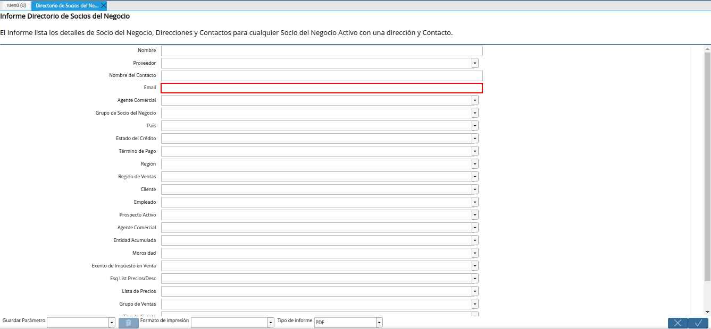
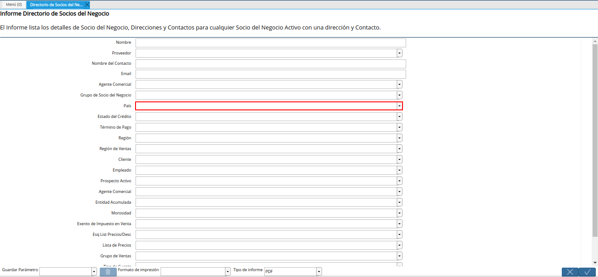
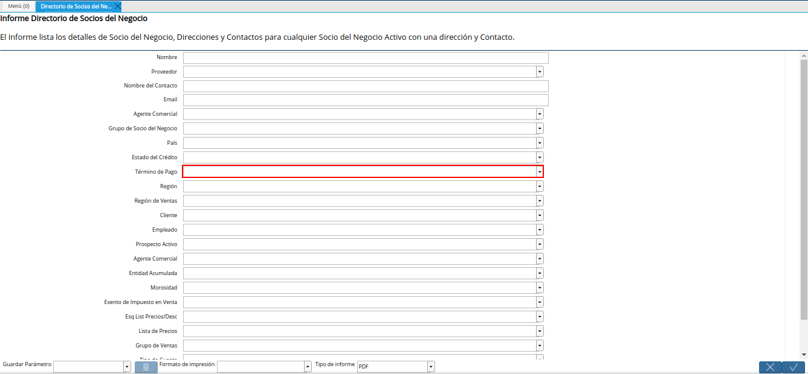
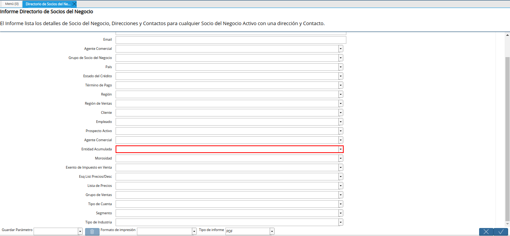
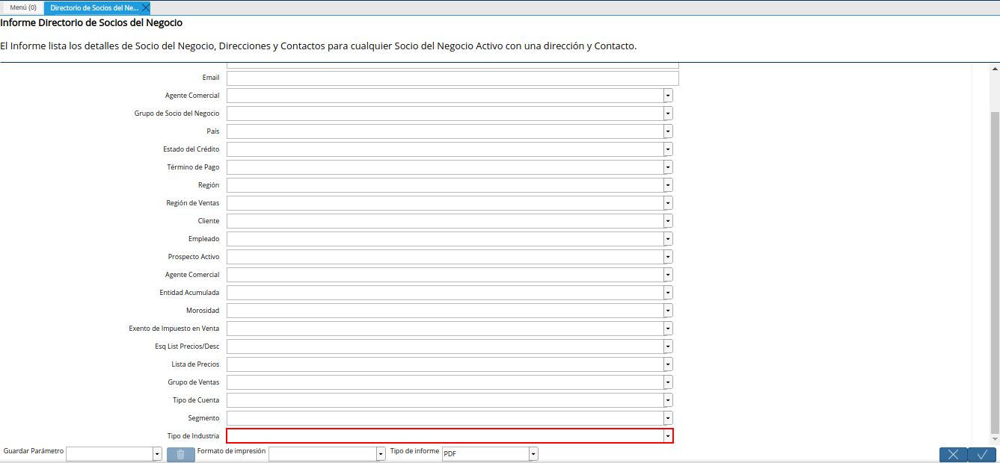

Directorio de Socios del Negocio
Ubique y seleccione en el menú de ADempiere, la carpeta “Relación con Socios del Negocio”, luego seleccione la carpeta “Reglas de Socios del Negocio”, por último seleccione el reporte “Directorio de Socios del Negocio”.
Imagen 1. Menú de ADempiere

Podrá visualizar la ventana del reporte “Directorio de Socios del Negocio”, con diferentes campos que permiten filtrar la información en base a lo requerido por el usuario.
Imagen 2. Ventana del Reporte Directorio de Socios del Negocio

Seleccione en el campo “Nombre”, el nombre del socio del negocio por el cual requiere filtrar la búsqueda de información.
Imagen 3. Campo Nombre del Socio del Negocio

Indique en el campo “Proveedor”, si requiere filtrar la búsqueda de información de los socios del negocio por proveedores.
Imagen 4. Campo Proveedor

Introduzca en el campo “Nombre del Contacto”, en nombre del contacto por el cual requiere filtrar la búsqueda de información.
Imagen 5. Campo Nombre del Contacto

Introduzca en el campo “Email”, la información de correo electrónico por la cual requiere filtrar la búsqueda de información.

Imagen 6. Campo Email
Seleccione en el campo “Agente Comercial”, el agente comercial por el cual requiere filtrar la búsqueda de información.
Imagen 7. Campo Agente Comercial

Seleccione en el campo “Grupo de Socio del Negocio”, el grupo de socio del negocio por el cual requiere filtrar la búsqueda información.
Imagen 8. Campo Grupo de Socio del Negocio

Seleccione en el campo “País”, el país por el cual requiere filtrar la información.

Imagen 9. Campo País
Seleccione en el campo “Estado del Crédito”, el estado del crédito por el cual requiere filtrar la búsqueda de información.
Imagen 10. Campo Estado del Crédito

Seleccione en el campo “Término de Pago”, el término de pago por el cual requiere filtrar la búsqueda de información.

Imagen 11. Campo Término de Pago
Seleccione en el campo “Región”, la región por la cual requiere filtrar la búsqueda de información.
Imagen 12. Campo Región

Seleccione en el campo “Región de Ventas”, la región de ventas por la cual requiere filtrar la búsqueda de información.
Imagen 13. Campo Región de Ventas

Indique en el campo “Cliente”, si requiere filtrar la búsqueda de información de los socios del negocio por clientes.
Imagen 14. Campo Cliente

Indique en el campo “Empleado”, si requiere filtrar la búsqueda de información de los socios del negocio por empleado.
Imagen 15. Campo Empleado

Indique en el campo “Prospecto Activo”, si requiere filtrar la búsqueda de información de los socios del negocio por prospectos activos.
Imagen 16. Campo Prospecto Activo

Indique en el campo “Agente Comercial”, si requiere filtrar la búsqueda de información de los socios del negocio por agente comercial.
Imagen 17. Campo Agente Comercial

Indique en el campo “Entidad Acumulada”, si requiere filtrar la búsqueda de información de los socios del negocio por entidad acumulada.

Imagen 18. Campo Entidad Acumulada
Seleccione en el campo “Morosidad”, la morosidad por la cual requiere filtrar la búsqueda de información.
Imagen 19. Campo Morosidad

Indique en el campo “Exento de Impuesto en Venta”, si requiere filtrar la búsqueda de información de los socios del negocio por exento de impuesto en venta.
Imagen 20. Campo Exento de Impuesto en Venta

Seleccione en el campo “Esq List Precios/Desc”, el esquema de lista de precios de descuento por el cual requiere filtrar la búsqueda de información.
Imagen 21. Campo Esq List Precios/Desc

Seleccione en el campo “Lista de Precios”, la lista de precios por la cual requiere filtrar la búsqueda de información.
Imagen 22. Campo Lista de Precios

Seleccione en el campo “Grupo de Ventas”, el grupo de ventas por el cual requiere filtrar la búsqueda de información.
Imagen 23. Campo Grupo de Ventas

Seleccione en el campo “Tipo de Cuenta”, el tipo de cuenta por el cual requiere filtrar la búsqueda de información.
Imagen 24. Campo Tipo de Cuenta

Seleccione en el campo “Segmento”, el segmento por el cual requiere filtrar la búsqueda de información.
Imagen 25. Campo Segmento

Seleccione en el campo “Tipo de Industria”, el tipo de industria por el cual requiere filtrar la búsqueda de información.

Imagen 26. Campo Tipo de Industria
Seleccione la opción “OK”, para generar el reporte de acuerdo a lo seleccionado en la ventana “Directorio de Socios del Negocio”.
Imagen 27. Opción OK

Al filtrar el reporte ingresando solamente el nombre del socio del negocio en el campo “Nombre”, podrá visualizar el reporte de la siguiente manera.
Imagen 28. Reporte Directorio de Socios del Negocio